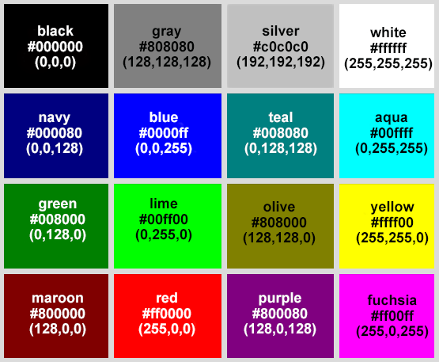
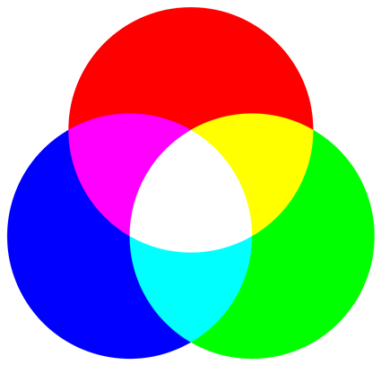
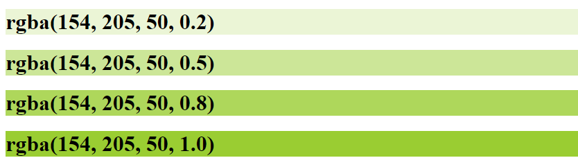
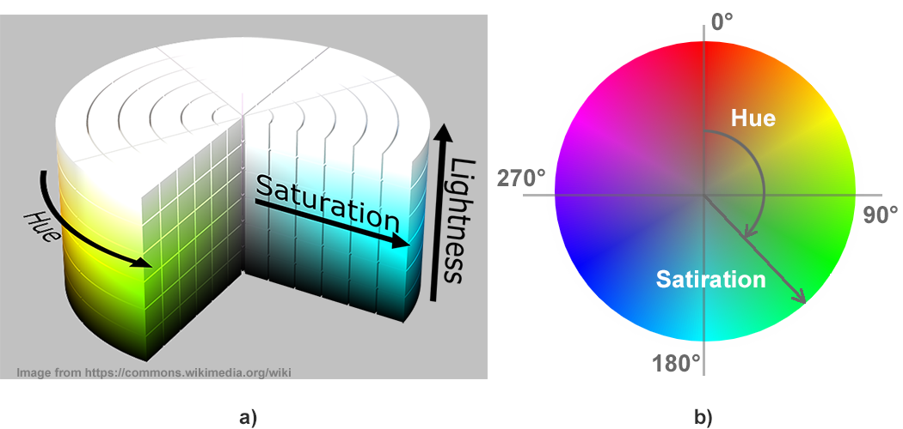
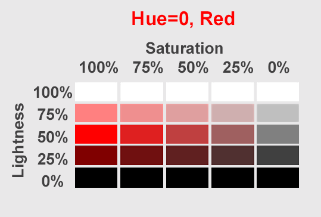
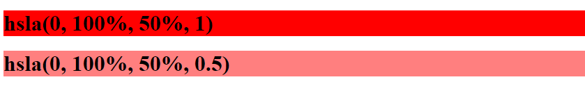
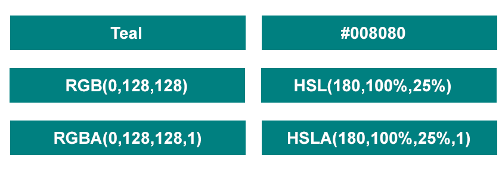

Documentacion
A continuacion te brindamos informacion con respecto a los colores hexadecimales, rgba y hsl su nomenclatura e imagenes alucibas de como se toma el color.
Leer masA continuacion te brindamos informacion con respecto a los colores hexadecimales, rgba y hsl su nomenclatura e imagenes alucibas de como se toma el color.
Leer masLos colores HTML son los colores utilizados para mostrar páginas web en la web. Están íntimamente ligados a los métodos de descripción y definición de estos colores mediante sus respectivos códigos de color. Por ejemplo, los colores HTML se pueden especificar como nombres de colores comunes en inglés, o con valores HEX, trillizos RGB, HSL, RGBA y HSLA.
Los colores juegan un papel esencial en la formación del valor percibido del contenido web y las emociones que experimenta una persona cuando lo ve. En HTML y XHTML, los colores se pueden usar para texto, fondo, bordes de marcos, tablas y celdas de tablas individuales.
La especificación W3C de los nombres de los colores distingue los colores básicos y los extendidos. Los 16 colores básicos son agua, negro, azul, fucsia, gris, verde, lima, granate, azul marino, verde oliva, morado, rojo, plateado, verde azulado, blanco y amarillo. Los navegadores modernos admiten 147 nombres de colores HTML.
La figura ilustra 16 colores básicos con códigos HEX y RGB:
Los códigos de color HTML son un medio para representar un formato de color que una computadora puede leer y mostrar. Los códigos de color se utilizan en HTML y CSS para crear esquemas de color de diseño web. Son utilizados principalmente por diseñadores web, desarrolladores front-end, programadores e ilustradores digitales.
RGB (Rojo, Verde, Azul) es un modelo de color aditivo que describe cómo se codifica cualquier color usando tres básicos. Es la base del color que muestra la luz en pantallas de TV, computadoras, escáneres de imágenes, proyectores de video, cámaras digitales y dispositivos móviles.
Los valores R, G y B son la intensidad (en el rango de 0 a 255), respectivamente, de los componentes rojo, verde y azul del color determinado. Es decir, un color azul brillante se puede definir como (0,0,255), rojo como (255,0,0), verde brillante - (0,255,0), negro - (0,0,0) y blanco - ( 255,255,255). RGB es un modelo de código de color popular en fotografía, televisión y gráficos por computadora. Ya que hay 256 opciones de cantidad diferentes para cada color. Entonces, puede haber 256 ^ 3 = 16,777,216 colores RGB diferentes en total. Mezclar estos tres colores le daría un código de color RGB representado, por ejemplo, como este RGB(125,50,210).
Una de las formas más típicas de transmitir el color es a través de sistemas visuales como diagramas o modelos gráficos donde cada color tiene su propio conjunto individual de coordenadas. Por ejemplo, el sistema de color RGB se puede representar como un cubo con 255 puntos discretos en cada lado:
.png)
Los códigos HEX son los códigos de color más utilizados. Los códigos HEX son números hexadecimales de tres bytes (seis variables). El número de color de seis dígitos está estructurado en tres grupos de dos dígitos que especifican la cantidad de rojo, verde y azul en el color aditivo. Cada par hexadecimal de dos dígitos puede tener un valor de 00 a FF. Esto da más de 16 millones de colores posibles.
El código se expresa de la siguiente manera: #RRGGBB, donde cada uno de los valores de dos dígitos es un rango de cada uno de los tres colores (rojo, verde, azul), con lo cual se selecciona el valor final que representa cada color. Por ejemplo, #00FF00 se muestra en verde, porque el componente verde está configurado en su valor máximo (FF) y los demás están configurados en 00.
Los valores de color RGBA (Rojo, Verde, Azul, Alfa) son una extensión de los valores de color RGB con un canal alfa que determina la opacidad del color. El parámetro alfa es un número entre 0,0, que significa "totalmente transparente", y 1,0, que significa "totalmente opaco". Por ejemplo, rgba(255, 0, 0) se muestra en rojo puro, rgba(255, 0, 0, 0,5) se muestra en rojo con un 50 % de opacidad.
La figura muestra los valores RGBA del nombre del color “Amarillo-Verde” con diferente transparencia:
Para un valor RGBA, a diferencia de los valores RGB, no hay notación hexadecimal.
Muchas personas consideran que el código de color RGB no es intuitivo y está orientado al hardware. El modelo de color HSL (Tono, Saturación, Luminosidad) fue desarrollado en la década de 1970 por investigadores de gráficos por computadora para igualar más de cerca cómo la visión humana percibe los atributos que producen el color. En el modelo HSL, los colores de cada tono se organizan en un corte radial alrededor de un eje central de colores neutros, que van desde el negro en la parte inferior hasta el blanco en la parte superior. La representación HSL reorganiza los colores para hacerlos más intuitivos que la representación RGB. A menudo se usa para aplicaciones de gráficos por computadora, como selectores de color y análisis de imágenes.
La figura muestra una interpretación gráfica en 3D del modelo HSL (a), la imagen está tomada de commons.wikimedia.org/wiki/. La Figura (b) muestra una interpretación gráfica 2D del modelo HSL para un valor de luminosidad del 50%.
HSL es una representación del modelo de color RGB en coordenadas cilíndricas. Hue define el color básico. Hue es básicamente cualquier color en la rueda de colores; es un grado en la rueda de colores de 0 a 360. Entonces, 0 es rojo, 120 es verde, 240 es azul. La saturación es la intensidad o pureza de un color. Determina qué tan vivo será el color. El cero por ciento es gris y el 100 por ciento es un color totalmente saturado. La luminosidad es la cantidad de brillo o luz en el color. La luminosidad determina la cantidad de tinte blanco o negro que tiene el color. Por ejemplo, el 50 por ciento no tiene tinte, el cero por ciento es completamente negro y el 100 por ciento es completamente blanco.
La siguiente tabla representa un tono. El color rojo ha sido elegido del círculo de colores. Tono=0. El eje X de la tabla representa la saturación (100%, 75%, 50%, 25%, 0%). El eje Y representa la ligereza. 50% es "normal".
Los valores de color HSLA (tono, saturación, luminosidad, alfa) son una extensión de los valores de color HSL con un canal alfa que determina la opacidad del color. El valor de color HSLA se especifica con tono, saturación, luminosidad y alfa, donde el parámetro alfa especifica la opacidad. El parámetro alfa es un número entre 0,0, que significa "totalmente transparente", y 1,0, que significa "totalmente opaco". Por ejemplo, hsla(0, 100 %, 50 %, 1) se muestra en rojo puro, hsla(0, 100 %, 50 %, 0,5) se muestra en rojo con un 50 % de opacidad:
Los colores HTML se pueden definir mediante un nombre, valores RGB, RGBA, HEX, HSL o HSLA y se pueden aplicar al fondo o al texto de los documentos HTML.
La siguiente figura ilustra cómo especificar el color verde azulado por nombre, valores RGB, RGBA, HEX, HSL y HSLA:
